Final R25 corrects the two trophy collision profiles to explicit NoCollision and verifies 2,231 actors. All 39 asset files, actor transforms, geometry and materials match the rendered R24 state. The final R25 screen and hall-clearance images below were captured after this correction.
Actual Unreal viewport captures. Equipment pairs use the same cameras in frozen R22 and final R24. Four replacement meshes bind the approved native materials; the new meshes use conventional rendering after Nanite artifact isolation. The reception TV65 has a fictional static BSOD. One cup and one blank plaque sit on original athletics case shelves. The two original cases were turned in place toward the hall to correct wall-facing glass. Click an image for full resolution.
No global renderer, OS, inherited material/effect or project configuration changes. Prior releases and the R22 slideshow are preserved. Movement coverage: fourteen paired routes were executed on R22 versus R24 (12 pass and 2 existing failures in each); two additional case-front routes were executed on R22 versus final R25 (2 pass in each). That is sixteen distinct paired routes across the two reports, not sixteen routes rerun on R25. No new regressions. The two added routes are five-meter northbound and southbound walks along the athletics cases. R25 changes only the two trophy contents collision profiles from R24; equipment geometry/materials and case footprints are unchanged. Visual limits: some rear treadmill details, rack 4 and exact shaft-to-ledge contacts are dark or occluded. Native geometry verification supports the protected bench donors, but the images do not expose every contact. This is scoped desktop review evidence.
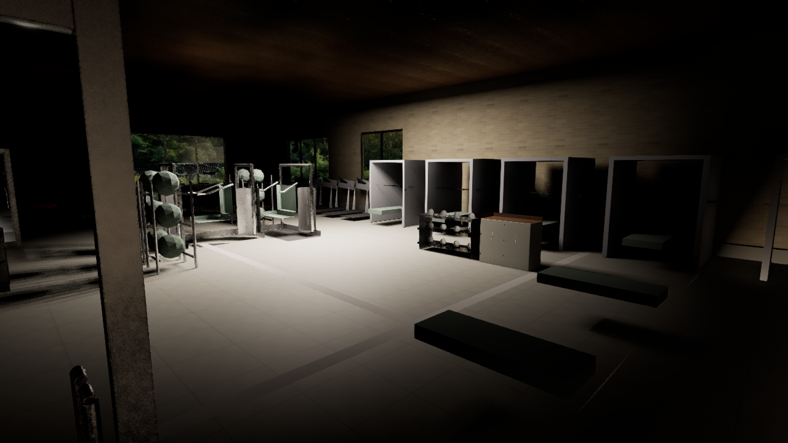
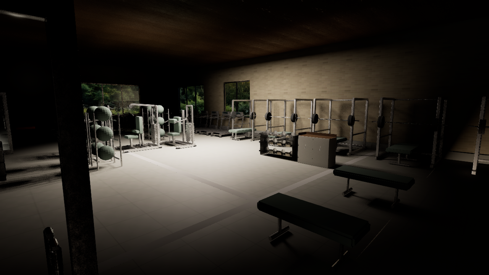
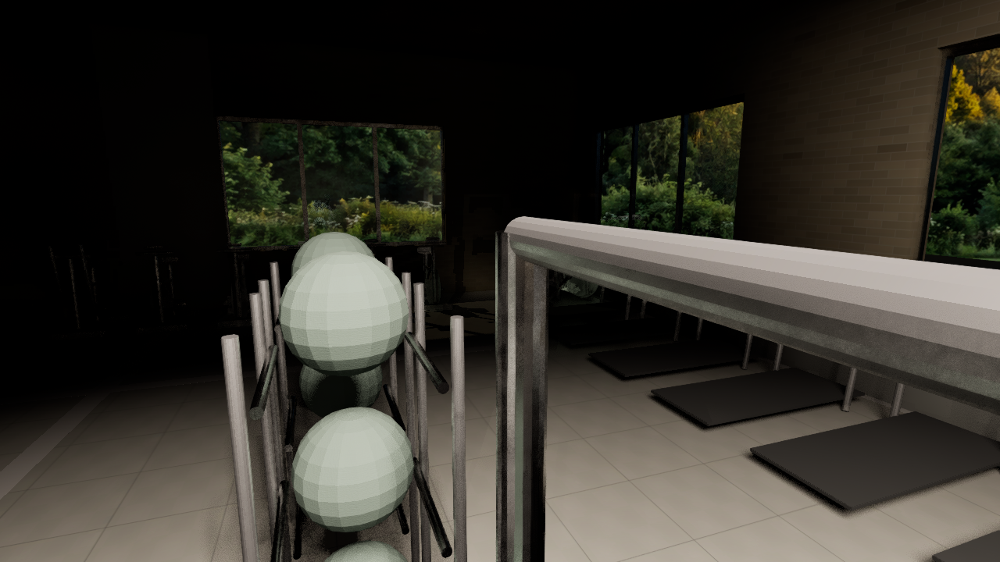
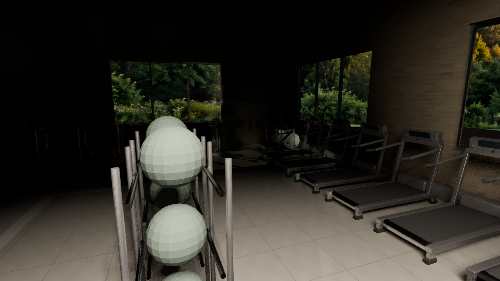
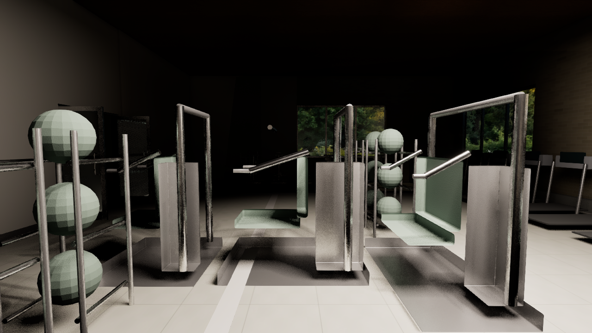
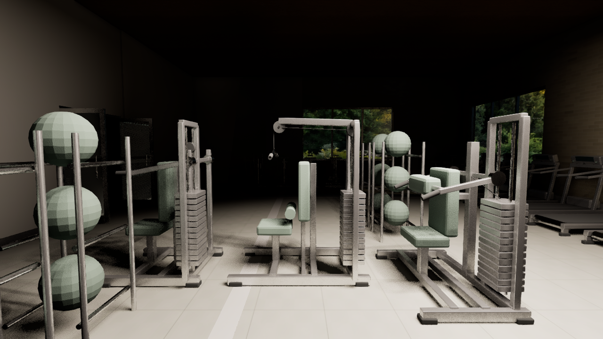
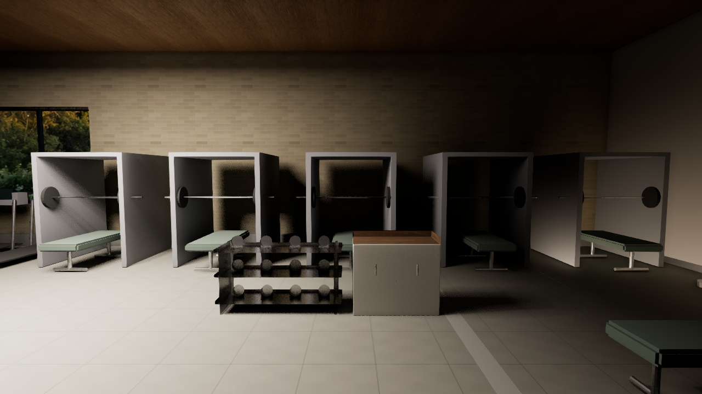
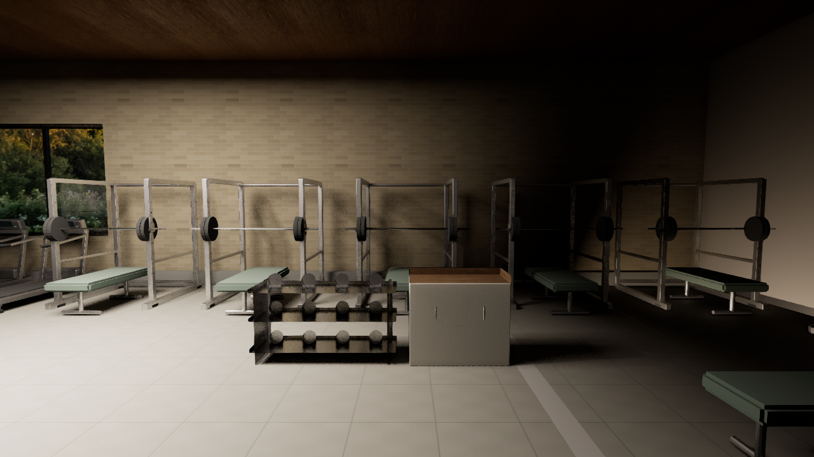
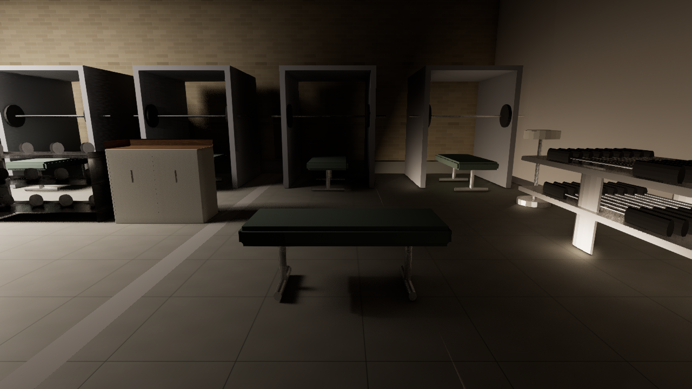
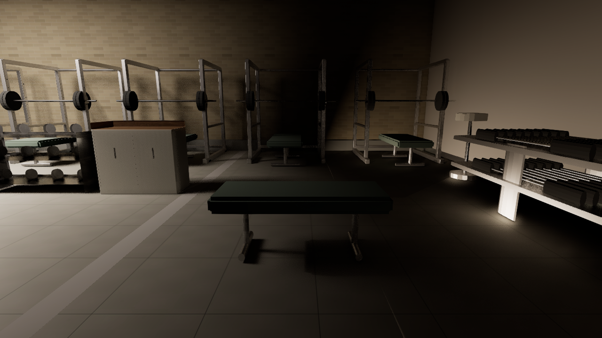
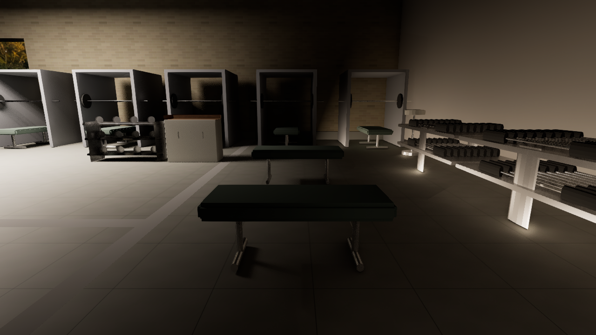
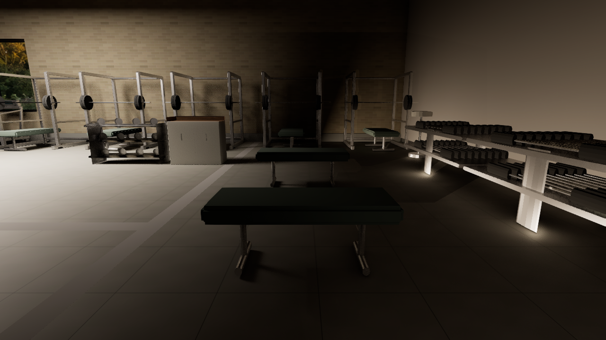